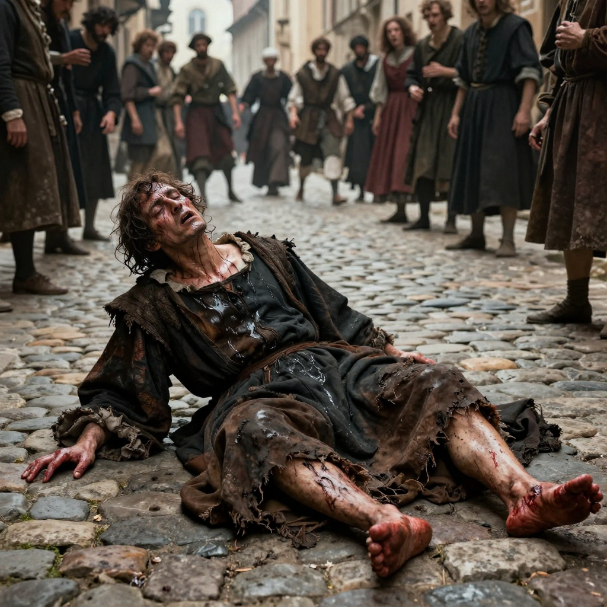
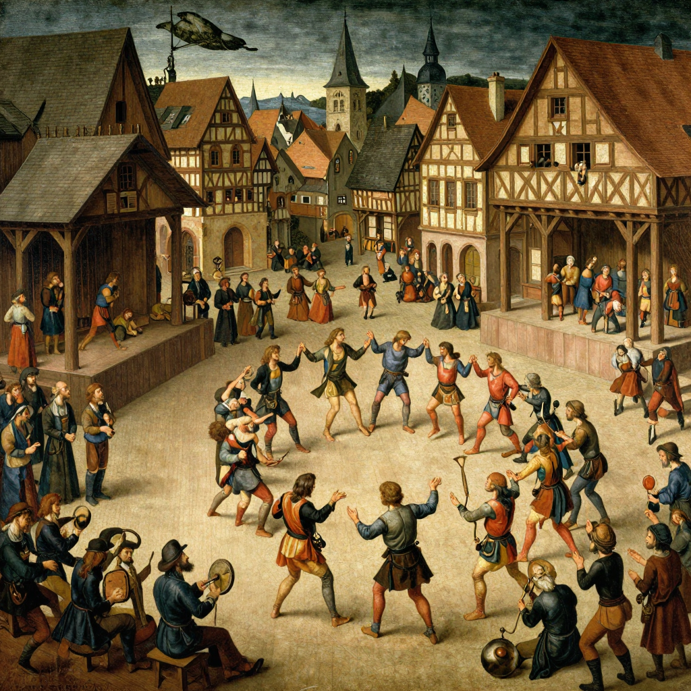

The Dancing Plague: When People Danced to Their Death!

In 1518, the people of Strasbourg couldn't stop dancing - even when they were dying!
Imagine being unable to stop dancing. Your legs are exhausted, your feet are bleeding, and you're begging for it to end - but your body just keeps moving. This actually happened to hundreds of people in 1518. It became known as the Dancing Plague.
For weeks, people in the city of Strasbourg (in modern-day France) danced day and night. Many collapsed from exhaustion. Some danced themselves to death. And to this day, nobody knows exactly why.
How It Started
It began in July 1518, when a woman named Frau Troffea stepped into the streets of Strasbourg and started dancing. She didn't stop. For six days, she danced without rest.
Then something strange happened: others joined her. Within a week, 34 people were dancing uncontrollably. Within a month, that number grew to 400 dancers!

Dancers collapsed from exhaustion, but many got back up and kept dancing!
💃 The Symptoms Were Terrifying
Victims danced for days without stopping. Their feet bled. Some suffered heart attacks or strokes. When they collapsed from exhaustion, they would twitch and jerk on the ground, still trying to dance!
The Strange "Cure"
Doctors at the time were baffled. They had no idea what was causing the dancing plague. But they came up with a "cure" that sounds crazy today:
Make them dance more!
Doctors believed the dancers had "hot blood" and needed to dance it out of their systems. So they built a wooden stage and hired musicians to play fast music. The idea was that if people danced enough, they would be cured.

Doctors actually hired musicians to make people dance MORE - which only made things worse!
As you might guess, this didn't work. People kept dancing until they collapsed. Some never got back up.
📊 The Death Toll
Historical records suggest that around 15 people per day were dying during the height of the plague. The dancing continued for about two months before finally stopping.
What Caused It?
Historians and scientists have proposed many theories:
🍞 Mold Poisoning: Some think a mold that grows on bread (ergot) caused hallucinations and convulsions. But ergot usually causes gangrene and death much faster - not dancing for weeks.
🧠 Mass Hysteria: The most popular theory today is "mass psychogenic illness" - when extreme stress causes physical symptoms that spread through a community. Strasbourg in 1518 was a stressful place: famine, disease, and religious conflict were everywhere.
🙏 Religious Ecstasy: Some believe people were caught up in a religious frenzy. Medieval people sometimes danced in churches as a form of worship. But the Dancing Plague was much more extreme and destructive.
It Happened Before!
The 1518 plague wasn't the first of its kind. Similar dancing outbreaks occurred throughout medieval Europe:
- 🎯 1374 - A dancing plague hit towns along the Rhine River
- 💒 1237 - Children in Erfurt danced until they collapsed
- 🎭 1278 - 200 people danced on a bridge until it collapsed!
The Mystery Continues
The Dancing Plague of 1518 remains one of history's strangest events. We have records proving it happened, but we still don't know exactly what caused it or why it stopped.
Was it mass hysteria? Poisoning? Something supernatural? The people of Strasbourg danced their way into history - and into one of its greatest mysteries!
Clear Summary for Readers of All Ages
The Dancing Plague: When People Danced to Their Death! can sound dramatic, but the best way to understand it is to separate strong evidence from speculation. This article is written to be clear enough for younger readers while still useful for adults who want reliable context.
In simple terms, this topic matters because it connects three ideas: what happened, how we know, and what remains uncertain. The core story in The Dancing Plague: When People Danced to Their Death! is easier to follow when we use a timeline, define key terms, and point directly to sources.
In 1518, the people of Strasbourg couldn't stop dancing - even when they were dying!
Background Timeline (What Happened, Step by Step)
- In 1518, the people of Strasbourg couldn't stop dancing - even when they were dying!
- This actually happened to hundreds of people in 1518.
- It began in July 1518, when a woman named Frau Troffea stepped into the streets of Strasbourg and started dancing.
- Strasbourg in 1518 was a stressful place: famine, disease, and religious conflict were everywhere.
- The 1518 plague wasn't the first of its kind.
This timeline view helps younger readers build a mental map, and it helps adult readers evaluate whether later claims fit the documented sequence of events.
What We Know with Strong Support
Across discussions of The Dancing Plague: When People Danced to Their Death!, several points are consistently supported by records or repeatable analysis:
- In 1518, the people of Strasbourg couldn't stop dancing - even when they were dying!
- Your legs are exhausted, your feet are bleeding, and you're begging for it to end - but your body just keeps moving.
- For weeks, people in the city of Strasbourg (in modern-day France) danced day and night.
- It began in July 1518, when a woman named Frau Troffea stepped into the streets of Strasbourg and started dancing.
These claims are stronger because they can be checked independently, rather than depending on one dramatic story or one unverified source.
How Researchers Study This Topic
Good history is a method, not just a story. When experts examine The Dancing Plague: When People Danced to Their Death!, they usually combine source criticism, technical analysis, and contextual comparison.
- Historians compare primary records, later retellings, and modern scholarship to reduce errors from repetition.
- A strong interpretation separates what documents clearly show from what is inferred later by commentators.
- Context is essential: social, political, and economic conditions often explain why events looked mysterious at the time.
For readers aged 7+, a simple rule is helpful: if someone makes a big claim, ask, “What is the evidence, and can another expert check it?”
What Experts Still Debate
Even with good evidence, not every question has a final answer. In The Dancing Plague: When People Danced to Their Death!, debates often continue because the surviving data is incomplete, damaged, or interpreted in different ways.
One common source of confusion is mixing the topics of How It Started, The Strange "Cure", and What Caused It? as if they prove the same thing. In reality, each part of the story may require different standards of proof.
A balanced approach is to keep uncertainty visible: we can confidently state what records show today, while leaving room for future evidence to update the picture.
Myths vs. Evidence
Myth: If a topic is mysterious, experts have no idea what happened.
Evidence-based view: Usually, experts know many parts of the story; the debate is about specific details.
Myth: The most dramatic explanation is probably true.
Evidence-based view: The best explanation is the one that matches the most verifiable facts with the fewest assumptions.
Myth: New claims automatically replace old research.
Evidence-based view: New claims become accepted only after careful checks, replication, and critical review.
Why This Story Still Matters Today
The Dancing Plague: When People Danced to Their Death! is not only a curiosity from the past. It is also a practical lesson in how people evaluate information. In a world full of fast headlines, this topic reminds us to slow down, check sources, and separate confidence from certainty.
For younger readers, this builds critical-thinking skills. For adult readers, it improves media literacy and historical judgment. In both cases, the goal is the same: understand the past clearly enough to make better decisions in the present.
Mini Glossary (Plain Language)
- Primary source: A record made close to the event, like a report, letter, inscription, or official document.
- Secondary source: A later explanation that interprets primary evidence.
- Hypothesis: A proposed explanation that must be tested against evidence.
- Consensus: The view most experts currently support, knowing it can change with new data.
- Archival record: Stored historical documents such as court files, newspapers, and official correspondence.
- Historical bias: A systematic slant in records due to who wrote them and why.
Quick Recap
If you remember only three things about The Dancing Plague: When People Danced to Their Death!, keep these: (1) there is real evidence worth studying, (2) some questions remain open, and (3) careful source-checking is the best path to reliable understanding.
That combination of curiosity and caution is what turns a mystery into a meaningful history lesson for readers of every age.
Extended Context for Deeper Reading
When we revisit The Dancing Plague: When People Danced to Their Death! with patience, we usually find that the most useful progress comes from careful comparison: compare early reports with later analysis, compare confident claims with documented limits, and compare popular retellings with primary evidence. This method is not flashy, but it is reliable. It helps readers of every age build accurate understanding without losing curiosity.
References & Further Reading
Editorial note: We cross-check claims across multiple independent sources. See our Editorial Policy.